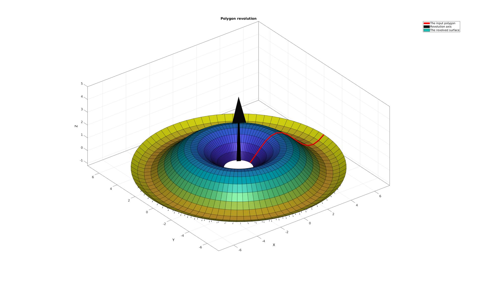
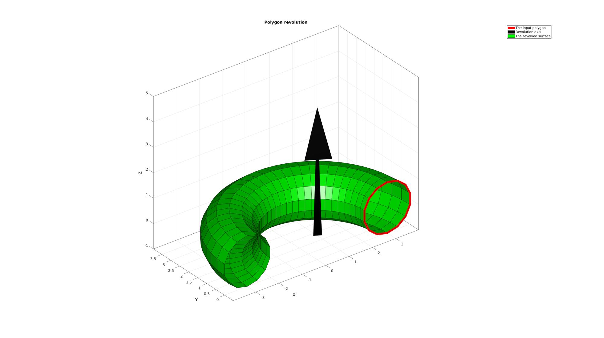
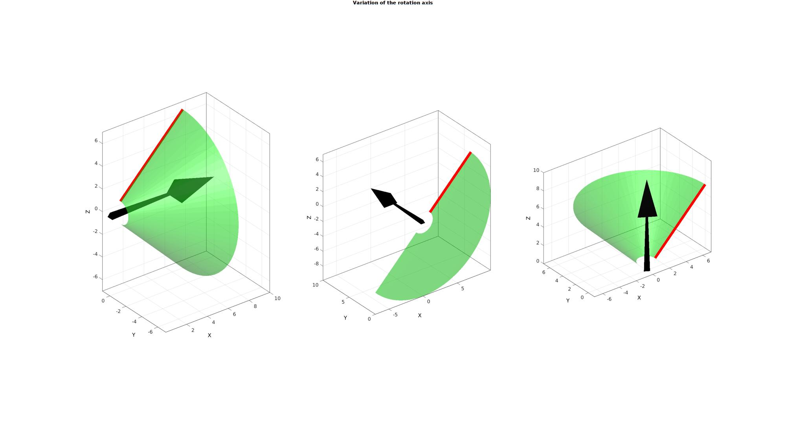
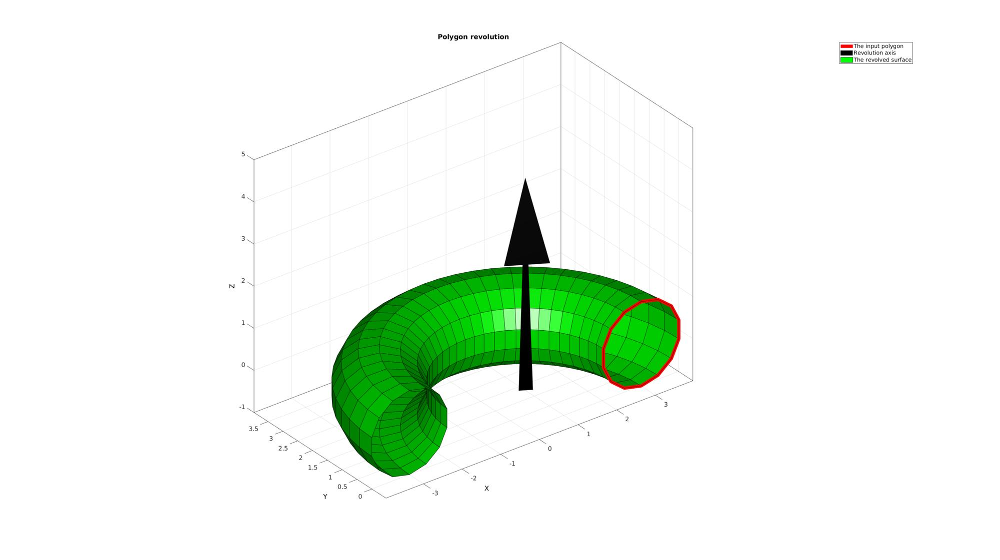
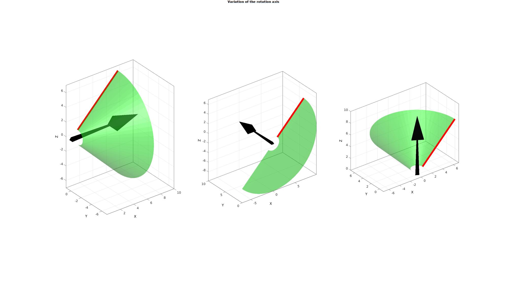

polyRevolve
Below is a demonstration of the features of the polyRevolve function
Contents
Syntax
[F_tri,V_tri]=polyRevolve(Vc,cPar);
Description
The polyRevolve function can be used to revolve polygons to obtain surface patch data and generate CAD like model geometry. See also: polyExtrude and polyLoftLinear
Examples
clear; close all; clc;
Plot settings
fontSize=15; lineWidth=8;
Example: Revolving a polygon
Creating an example polygon (or sketch)
ns=15; x=linspace(0,2*pi,ns)+1; y=zeros(size(x)); z=-cos(x); Vc=[x(:) y(:) z(:)];
Revolving the polygon to obtain a surface model
cPar.closeLoopOpt=1;
cPar.numSteps=[]; %If empty the number of steps is derived from point spacing of input curve
cPar.w=[0 0 1];
[F,V,C]=polyRevolve(Vc,cPar);
Plotting results
cFigure; title('Polygon revolution','FontSize',fontSize); hold on; hp1=plotV(Vc,'r-','lineWidth',lineWidth); hp2=quiverVec([0 0 0],cPar.w,5,'k'); hp3=gpatch(F,V,C,'k'); patchNormPlot(F,V); axisGeom(gca,fontSize); camlight headlight; legend([hp1 hp2 hp3],'The input polygon','Revolution axis','The revolved surface'); drawnow;
Example: Revolving a closed polygon
Creating an example polygon (or sketch)
ns=15; t=linspace(0,2*pi,ns); r=1; x=r*sin(t)+3*r; y=zeros(size(x)); z=r*cos(t); Vc=[x(:) y(:) z(:)];
Revolving the polygon to obtain a surface model
cPar.closeLoopOpt=1; cPar.numSteps=[]; %If empty the number of steps is derived from point spacing of input curve cPar.w=[0 0 1]; %Revolution axis cPar.theta=1*pi; %revolution angle cPar.closeLoopOpt=0; %Do not close by attaching ends [F,V,C]=polyRevolve(Vc,cPar);
Plotting results
cFigure; title('Polygon revolution','FontSize',fontSize); hold on; hp1=plotV(Vc,'r-','lineWidth',lineWidth); hp2=quiverVec([0 0 0],cPar.w,5,'k'); hp3=gpatch(F,V,'g','k'); axisGeom(gca,fontSize); camlight headlight; legend([hp1 hp2 hp3],'The input polygon','Revolution axis','The revolved surface'); drawnow;

Example: Changing the axis of revolution
Creating an example polygon (or sketch)
ns=15; x=linspace(0,6,ns)+1; y=zeros(size(x)); z=x; Vc=[x(:) y(:) z(:)];
Creating an example set of rotation axes
W=eye(3,3); cFigure; gtitle('Variation of the rotation axis',fontSize); for q=1:1:size(W,1) cPar.w=W(q,:); [F,V,C]=polyRevolve(Vc,cPar); %Visualizing mesh subplot(1,size(W,1),q); % title(patchTypes{q},'FontSize',fontSize,'Interpreter','none'); hold on; hp1=plotV(Vc,'r-','lineWidth',lineWidth); hp2=quiverVec([0 0 0],cPar.w,10,'k'); hp3=gpatch(F,V,'g','none',0.5); axisGeom(gca,fontSize); camlight headlight; end drawnow;
  
  Example: Changing the angle of revolution
Creating an example polygon (or sketch)
ns=15; x=linspace(0,2*pi,ns)+1; y=zeros(size(x)); z=sin(x); Vc=[x(:) y(:) z(:)];
Creating an example set of angles
T=linspace(0.25*pi,2*pi,3); cPar.w=[0 0 1]; cPar.closeLoopOpt=0; %Do not close feature cFigure; gtitle('Variation of the rotation angle',fontSize); for q=1:1:size(W,1) cPar.theta=T(q); [F,V,C]=polyRevolve(Vc,cPar); %Visualizing mesh subplot(1,size(W,1),q); % title(patchTypes{q},'FontSize',fontSize,'Interpreter','none'); hold on; hp1=plotV(Vc,'r-','lineWidth',lineWidth); hp2=quiverVec([0 0 0],cPar.w,10,'k'); hp3=gpatch(F,V,'g','none',0.5); axisGeom(gca,fontSize); camlight headlight; end drawnow;


GIBBON www.gibboncode.org
Kevin Mattheus Moerman, gibbon.toolbox@gmail.com
GIBBON footer text
License: https://github.com/gibbonCode/GIBBON/blob/master/LICENSE
GIBBON: The Geometry and Image-based Bioengineering add-On. A toolbox for image segmentation, image-based modeling, meshing, and finite element analysis.
Copyright (C) 2019 Kevin Mattheus Moerman
This program is free software: you can redistribute it and/or modify it under the terms of the GNU General Public License as published by the Free Software Foundation, either version 3 of the License, or (at your option) any later version.
This program is distributed in the hope that it will be useful, but WITHOUT ANY WARRANTY; without even the implied warranty of MERCHANTABILITY or FITNESS FOR A PARTICULAR PURPOSE. See the GNU General Public License for more details.
You should have received a copy of the GNU General Public License along with this program. If not, see http://www.gnu.org/licenses/.